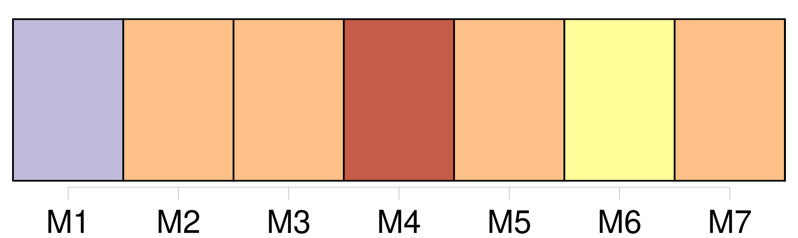
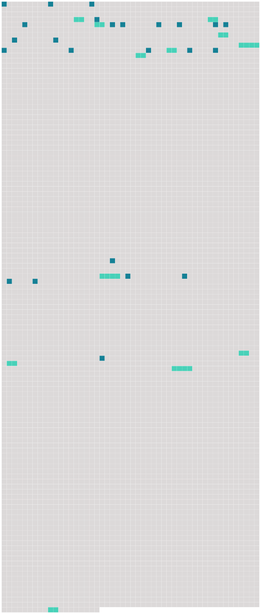

Longueur nb maillons : 36 mentions |
  |
[Papa] seul a le droit d'y chasser.
[Il] sait que je viens pêcher ici et [il] prendrait bien garde. [9 phrases] Noël, occupé à dégager sa ligne des herbes, n'entendit le pas de [son père] que lorsqu' [il] fut tout près de lui. [1 phrases]
Mais [le père] avait déjà vu :
demanda-t [-il] [2 phrases]
fit seulement [le père] [Il] ôta [son] fusil de l'épaule, le [mit] en sûreté et [vint] s'asseoir auprès de Noël.
[Il] dit [son] inquiétude à cause de la pluie, et s'étonna que le garçon ne fût pas mouillé. [7 phrases] [Le père] prit la ligne de la fillette ; mais [son] attention était ailleurs. À tout instant [il] se retournait pour regarder l'enfant. [3 phrases]
Elle s'éveilla soudain, et son regard se posa sur [le père de Noël] [qui] lui fit un signe amical : [Il] rit, et la petite Lumière rit aussi en s'avançant.
Puis, [sa] ligne posée, [le père] tira de [sa] poche des friandises qu' [il] partagea entre les deux enfants. [2 phrases]
Et, tandis que [le père] range les lignes, Noël et Douce, courant et sautant, regagnent le verger où le chien les attend, dressé de toute sa hauteur contre la grille du potager. [94 phrases] « [Papa] sait que je joue avec Douce. [6 phrases] Puis on voyait arriver [le père de Noël]
[Il] ne s'arrêtait guère que pour sortir le goûter de [sa] poche, et faire des recommandations aux enfants ; et, tournant le dos, [il] disparaissait aussi lentement qu' [il] était venu. [42 phrases]
Une après-midi que [le père] s'attardait à regarder les deux enfants au milieu de l'étang, Noël lui cria : [1 phrases]
dit en riant [le père] [2 phrases] Tout comme [le père de Noël] à Douce, le père Lumière faisait bonne figure à Noël lorsqu'il le rencontrait au Verger. [105 phrases] Il s'adosse à un sapin, puis à un autre, et de nouveau il parle : il travaillera ici, avec son frère, jusqu'à son départ pour le régiment, et au retour [son père] lui achètera une ferme dans les environs. |
 |
La ressource peut être téléchargée sur la page Ortolang
Si vous avez des questions ou vous voyez des erreurs, merci d'envoyer un mail à silvia.federzoni89@gmail.com
Site développé par S. Federzoni (contact)